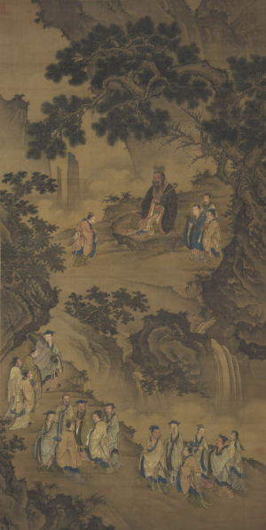
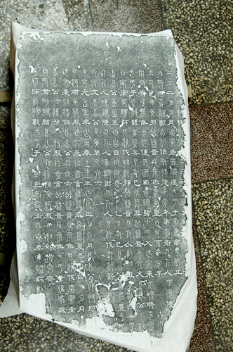
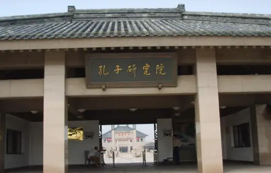
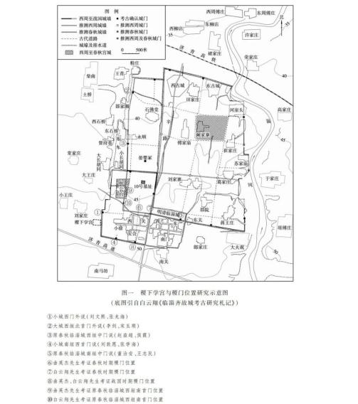
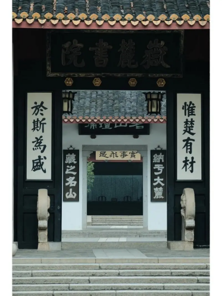

儒家教育的发展
夏商周 萌芽
孔子讲学图轴
孔子博物馆藏

第二阶段春秋战国时期先秦原始儒学阶段，由孔子创立，子思、孟子等先后发展孔子的基本思想，渐成学派。以仁、礼为基本内容，
以伦理为本位，以人道为中心，体现了儒家先贤的人本主义精神。儒家学派的创始人孔子是中国历史上创办私学的第一人。
他提出了“有教无类”的著名论点，打破了学校只教“国子”的教育制度，使教育对象扩展到平民阶层。孔子创办的私学不仅有供教学用的“堂”，
还有供弟子居住的“内”，形成了较为完善的教学体系。
汉 新儒学
正始石经残碑
洛阳博物馆

第四阶段唐宋时期，科举制的实施促进了儒家教育的发展，书院作为新的教育组织形式逐渐兴起。
书院不仅教授儒家经典，还注重学术研究与思想交流。如岳麓书院、白鹿洞书院等著名书院在唐宋时期相继建立，成为儒家教育的重要基地。
书院采用自由讲学、学术争鸣的教学方式，培养了大量人才。中央和地方各级官学继续发展，如国子监、府学、州学、县学等，均以教授儒家经典为主。
20世纪至今 新体系
孔子研究院

早期萌芽阶段夏商周时期，社会伦理的开端、王政道统的开辟、中国学术的起源都在这一时期高调亮相。虽然“儒家”的名称还没有出现，但儒家思想的真实内容已经存在。
最主要的学术著作是“六经”，即《诗》、《书》、《礼》、《乐》、《易》、《春秋》，这些经典具有不可替代的社会教育和思想指导作用。
春秋战国 原始儒学
稷下学宫与稷门位置研究图
方辉 田钟灵《稷下学宫考》

第三阶段汉代新儒学阶段，儒学成为受官方支持而为一尊的御用之学。以经学为表现形式，并与谶纬相结合，
兼综阴阳、名、法、黄老诸思想，形成有别于先秦时期的新儒学体系。汉武帝时宣布“罢黜百家，独尊儒术”，儒家思想成为官方正统思想，
儒家教育也随之得到大力发展。汉代的教育体系包括官学和私学两大系统。官学以教授儒家经典为主，如太学、鸿都门学等；私学则更加灵活多样，如书馆、经馆等。
唐宋 书院
岳麓书院

第五阶段20世纪至今，现代新儒学者致力于将儒家思想与西方哲学、科学等相结合，形成新的儒学体系。
一些学术研究机构如儒学研究院、孔子学院等致力于儒家思想的研究和传播工作，为儒家教育的发展提供了重要支持。